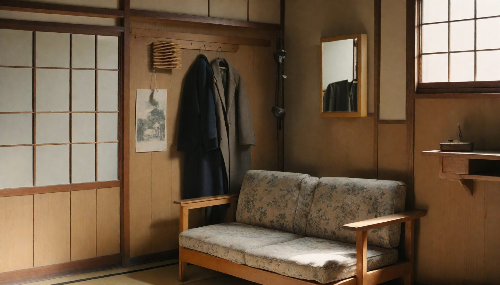

スタジオと設備
撮る部屋はひとつで奥行きは6mです。家族12人までなら一度に並べます。
背景紙は7色あります
- 薄いグレー
- 濃いグレー
- 白
- 空色
- 若草
- 茶色
- 黒
- 車いす入口に段差がなく車いすのまま撮れます。お手洗いも車いすで入れる広さです。
- 赤ちゃん授乳とおむつ替えに使える小部屋が1つあります。鍵がかかります。
- 着替え着替えの部屋は2つ。鏡とアイロンを置いています。
- 駐車場店の裏に3台。満車の時は向かいの有料駐車場の券をお渡しします。
写真師から
証明写真は、受け取った人が一度しか見ない写真です。だからこそ肩の線と目の高さだけは毎回定規で合わせています。記念写真はその反対で、何十年も見返す写真です。急がせずに撮ります。
1962年にこの場所で始めて今年で65年目です。写真師は2人。昨年は2,870人の証明写真を撮りました。
